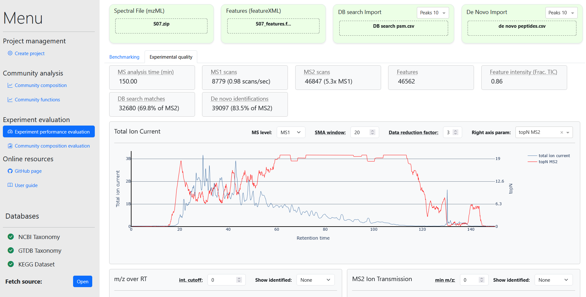
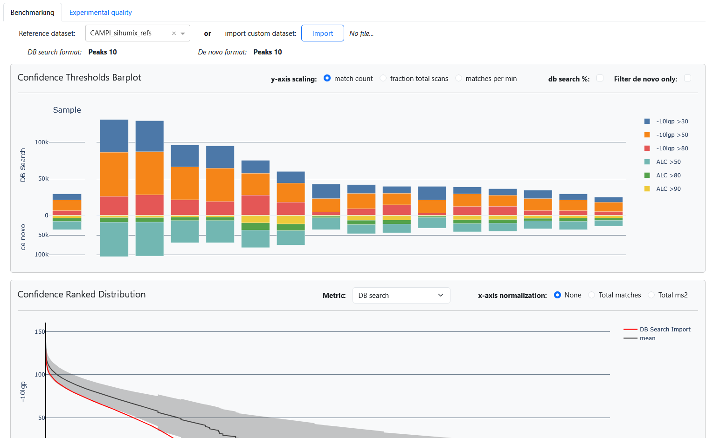
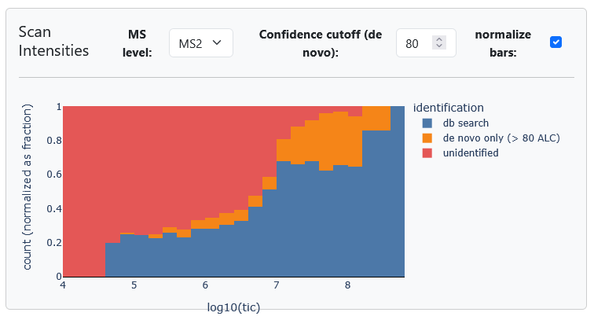

Spectral data analysis and experiment benchmarking
MetaPepView provides a separate module for visualization of (meta)proteomics experimental performance parameters, including benchmarking of experiments against a dataset of metaproteomics experiments. This visualization toolbox is present in the Experiment performance evaluation module. Here, MS spectral data can be imported in mzML format, additional feature information may be added in featureXML format, and spectral data may be supplemented with DB search and de novo (meta)proteomics data (several formats supported). This allows visualization of spectral quality parameters, as well as to link these parameters to peptide identification rates.

The Quality control module is structured in several tabs. The Benchmarking tab provides visualizations to compare (benchmark) an imported experiment with a experimental benchmark dataset, the Experimental quality tab provides visualizations connecting spectral quality to peptide identification performance.
Data import
On the top of the module page, importers for the spectral data (mzML), feature data (featureXML), DB search data and de novo data are provided. Data imported here will be visualized in the module. Part of the datasets may be omitted on import. However, some visualizations that require the missing datasets will not be displayed. For DB search and de novo data, it should be ensured that they were derived from the same MS run as the mzML and featureXML file. MetaPepView will only combine data that are from the same MS run.
Benchmarking
The benchmarking tab provides a set of visualizations that compare a single experiment against a dataset of experiments. MetaPepView provides two standard datasets, shown under the Reference dataset dropdown menu, for testing purposes. However, it is good practice to generate your own benchmark datasets with suitable samples and MS conditions.
A new benchmark dataset can be imported from the import custom dataset importer. A CLI tool "mpv-buildref" is provided to build a new benchmark dataset. When providing a root directory (which should contain all mzML files, together with DB search and de novo data), as well as format settings, this tool will generate a summary file that contains performance parameters for all experiments that can be imported into the module.
Note
To prevent biases in proteomics data processing between samples, MetaPepView will only benchmark experiments against the reference dataset if the DB search and de novo input data are in the same format for both dataset. The formats for the benchmark dataset is displayed after import into the dashboard.
This format constraint is also present for the benchmark dataset. If a custom dataset is constructed, all DB search and de novo files should be in the same format across all experiments.

An overview of the available evaluation graphs is shown below.
Confidence thresholds barplot
Quick profiling of the output quality from a (meta)proteomics experiment can be performed by comparing the number (or fraction) of peptide identifications above predefined confidence thresholds. The thresholds from a single experiment (left bar) can be compared to the experiments from the benchmark dataset (right bars). The graph allows scaling of the y-axis by peptide counts, fraction matches above thresholds of total scans, and the average number of matches above thresholds per minute (scaled by total retention time). For de novo identifications (bottom bars), either all identifications may be shown, or they may be filtered to only show de novo peptides not identified from DB search.
While the graph allows quick observation of identification performance between experiments, certain patterns may imply issues in the experimental/analysis conditions:
- A low fraction of high confidence peptide identifications compared to lower confidences may imply lower spectral quality from the raw MS data. This should also be reflected in a low number of de novo identifications.
- A low number of DB search matches combined with a large number of (high confidence) de novo identifications may be due to the use of a database for DB search that does not represent the metaproteome of the sample well. Also, presence of high confidence de novo only peptides (peptides that were not identified from DB search matching) implies that.
Note
The numbers/fractions of DB search matches and de novo identifications that may be considered acceptable vary greatly between the type of samples and analysis conditions. Therefore, it is important that the benchmark dataset comprise experiments similar to the analysed sample.
Peptide confidence scatterplot
An alternative method to observe the number of peptide identifications of an experiment (red markers) against the benchmark dataset (blue dots) is through a scatterplot. This graph shows the number (or fraction) of peptide identifications above predefined thresholds from DB search matching (left groups), de novo identifications (middle groups), and de novo only (d-only) identifications (right groups). Peptide identifications may be normalized by fraction of total MS2 scans, or by total retention time (count per minute).
Confidence ranked distribution
The distribution of peptide identification confidence between an experiment (red line) and the benchmark dataset (gray area for 95% confidence interval) can be observed in the ranked distribution plot. Here, peptide identifications are sorted on the x-axis by confidence (y-axis). The distribution (x-axis) can be shown as top-n matches, or normalized as fraction of total matches, or fraction of MS2 matches. The distribution of either DB search or de novo identifications may be plotted.
Note
DB search and de novo tools often only report peptides above a confidence threshold, unless x-axis normalization is set to Total matches, the distribution of the benchmark dataset will be skewed as more experiments reach the confidence threshold (the end of the dataset). This should be taken into account when analysing the further end of the x-axis.
Scan intensity distribution
One metric for spectral quality evaluation is the distribution of MS scan intensities. Here, this is plotted as the median, 90'th percentile, and 99'th percentile intensity of MS1 and MS2 scan. An experimental sample (red marker) may be compared against the benchmark dataset (blue dots).
Several factors may influence the intensity distribution of scans. For example, low MS1 intensities may imply that low amount of sample was submitted to the MS. Low MS2 intensity (relative to MS1) may imply low ion transmission efficiency (large loss of signal during fragmentation). Finally, strange patterns between median and x percentile groups may indicate presence of pollutants, or sparse elution of peptides.
Ion Transmission
Presence of pollutants during MS analysis or insufficient cleaning of the MS may result in greater loss of signal during ion transmission, especially during fragmentation of peptides prior to MS2 analysis. This may greatly impact the quality of (meta)proteomics data as MS2 signal loss lowers the confidence of peptide identification.
Here, the distribution of ion transmission efficiencies of MS2 scans is visualized as total MS2 signal as percentage of the precursor ion measured in the prior MS1 scan (intensity of the peak from MS1, which was selected for MS2 scanning):
The median efficiency, as well as the 90'th and 99'th percentile (lowest efficiencies) are visualized. A high percentage indicates higher transmission efficiency. Thus, a larger fraction of total signal was measured in MS2.
The transmission efficiency may be rescaled by ion injection time; a major factor of signal intensity is the accumulation time of ions prior to the MS scan, where shorter injection times result in lower signal intensities. This time may change on a per-scan basis to prevent oversaturation of the sensors. Generally, the injection time of MS1 scans are much shorter than those from MS2 scans (which may result in transmission efficiencies >100%). In addition, MS1 injection times may vary strongly. By applying Scale ion injection time, all scans are corrected for their injection times before the ion transmission is calculated: $$ Eff_{ion\ tr} = \frac{Int_{tic\ MS2}}{Int_{prec\ MS1}} \times \frac{Inj_{MS1}}{Inj_{MS2}} \times 100\% $$

Miscleavage distribution
Prior to MS submission, proteins are cleaved into short peptides, often with Trypsin (in combination with Lys-C) enzyme. These cleave proteins into peptides that have lengths well suited for MS detection and identification. This protein digestion is usually a time consuming step, and often, a balance is made between the amount of cleavage and digestion time. However, too short digestion time, as well as potential bad conditions during digestion, may result in a large fraction of multiply miscleaved peptides. As a result, a large fraction of protein material may become inaccessible for MS detection.
This graph analyses DB search data from the reference dataset and the experiment dataset to provide a distribution of miscleavages, it counts the number of cleavage amino acids (arginine/lysine) present in each peptide (Except for the C-terminal amino-acid) and counts PSM's at each miscleavage number. These are provided as stacked bar graphs.
Experimental quality
The experimental quality page shows detailed information of spectral and (meta)proteomics performance for a single sample.
General experiment metrics
Key metrics from a single MS experiment are displayed at the top of the page. These metrics give a quick overview of the experiment. These include:
- Total retention time (min): Total length of the MS run.
- MS1 scans: The number of MS1 (precursor) scans.
- MS2 scans: The number of MS2 (fragment) scans. Also shown as multiplier of MS1 scans.
- Features: The number of features captured in the featureXML file.
- Feature intensity (Frac. TIC): The combined signal intensity attributed to a feature, as fraction of the total intensity of all peaks.
- DB search matches: The number of DB search matches (PSM's). Also as fraction of MS2 (success rate).
- De novo identifications: The number of de novo peptides. Also as fraction of MS2 (success rate).
Total Ion Current
Show a profile of the total ion current (TIC) (and other parameters) over the retention time (RT). There are several options to change the data to display, or to combine spectral data with DB search matching de novo peptide identification data:
- MS level: Profile either MS1 TIC or MS2 TIC over retention time.
- SMA window: Smoothening of the line plot is done by applying the Simple Moving Average (SMA) to the scan TIC values. The SMA window is the number of raw MSx scans to take for a single SMA value.
- Data reduction factor: In case of large scan numbers, the data reduction factor can be set to reduce the number of data points by taking each n'th data point while omitting the other points. This loses information but speeds up operation of the figure.
- Right axis param: Overlay the TIC/RT line with a second parameter using the right y-axis:
- DB search counts: Plot the number of DB search matches as histogram.
- De novo counts: Plot the number of de novo identifications as histogram.
- Peak count: Plot a simple moving average of the number of peaks per MS1/MS2 scan.
- Peak width (FWHM): Plot a simple moving average of elution times (at Full Width Half Maximum) of MS1 features.
- Feature quality: Plot a simple moving average of the calculated feature quality.
- Ion injection time: Plot a SMA of the MS1/MS2 ion injection time.
- topN MS2: Plot a SMA of the topN MS2 scans: The number of MS2 scans followed after a MS1 scan.
- Confidence cutoff: (DB search counts de novo counts only) Only display DB search de novo peptide counts above the specified confidence threshold (only present if DB search de novo confidence selected as secondary parameter).
- int. cutoff: (Peak count only) Only consider peaks above a intensity threshold for visualization of the peak counts (see secondary param).
m/z over RT
Plot MS2 scans by their precursor m/z value and the retention time. This allows for a detailed profiling of the elution profile and can be used to evaluate the used LC gradient. Scans may be grouped by successful DB search de novo identification and filtered by a specified MS2 intensity cutoff.
MS2 Ion Transmission
Display the ion transmission efficiency for each MS2 scan in the spectral dataset. The MS2 Total Ion Current (TIC) (y-axis) is plotted against the precursor intensity (x-axis). Scans may be grouped by successful DB search de novo identification and a m/z cutoff may be applied to filter low m/z noise from the MS2 TIC.
Scan Intensities
The Scan Intensities figure shows the distribution of scans over the Total Ion Current range (TIC). The number of MSx scans at different TIC bins are counted. For MS2, scans may be grouped by successful DB search matched scans, de novo only identified scans (no DB search match), and unidentified scans. In addition, by checking normalize bars, the fraction of each scan category (color) at each TIC bin is displayed as opposed to the counts.

Charge distribution
A potential measure for contamination inside the MS run is the distribution of feature charges. Tryptic peptides will typically have charge 2-4 in the MS1 spectra. Therefore, a large fraction of high charged features (>8) or singly charged features may be attributed to contamination in the sample. In this plot, the distribution of charge numbers across all observed features is displayed. These features may be partitioned in DB search matched, de novo only identified or unidentified fractions, if DB search and/or de novo data is included. This allows visualization of the success rate of peptide identification at a given charge state: